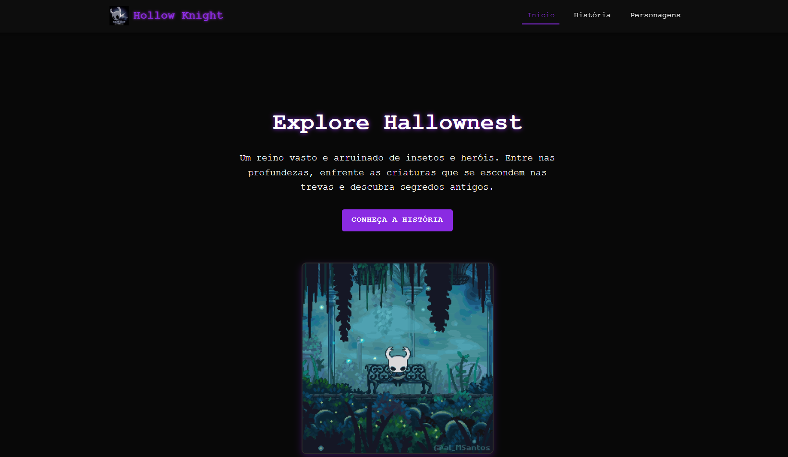
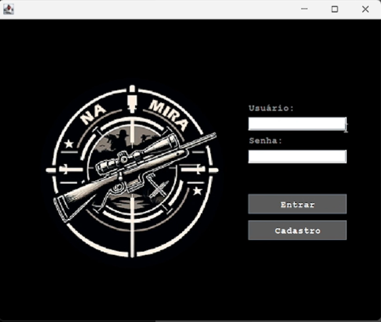

Meus Projetos

Landing Page Moderna
Este é um site responsivo feito com HTML e CSS sobre o jogo Hollow Knight. A página mostra informações sobre o jogo, personagens e imagens. O visual segue o estilo escuro e misterioso do Hollow Knight, com um design limpo e fácil de usar.
Visualize o site

Aplicativo de loja online
Este projeto simula um sistema de vendas de armas desenvolvido em Java com interface gráfica. O sistema permite que o usuário navegue pelos produtos disponíveis, adicione itens ao carrinho, realize o pagamento e finalize a compra. A interface é intuitiva e oferece uma experiência simples para gerenciar o processo de compra de forma eficiente.
Ver demo